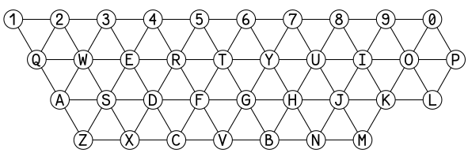

Load hibari.mid (or any MIDI file), then press Play.
Notes will light up on the Tonnetz in real time.
REC 버튼을 누르고 Play → 다시 REC로 중지하면 .webm 파일로 저장됩니다.
YouTube 업로드 시 Handbrake로 mp4 변환을 권장합니다.
Persistent H₁ cycles detected by TDA are always shown as semi-transparent polygons on the Tonnetz.
| Cycle | Notes | Interpretation | Color |
|---|---|---|---|
| A | E – G – B | E minor triad | |
| B | C – E – G | C major triad | |
| C | D – F – A | D minor triad | |
| D | F – A – C – E | Fmaj7 / Am7 shell |

timeflow = intra + rate × inter. As rate increases,
inter-chord connections strengthen and H₁ cycles appear / vanish.
The Tonnetz overlays scale in opacity to reflect each cycle's total persistence.
% 계산:
현재 rate에서 해당 사이클과 겹치는 H₁ 구간들의
Σ(death − birth)를 rate 0–1.5 전체 최댓값으로 나눈 비율.
값이 클수록 그 화음 구조가 이 rate에서 위상적으로 더 뚜렷하게 존재함.
Each bar = one H₁ cycle's [birth, death] interval in the Vietoris–Rips filtration. Longer bars = more persistent topological features. Colors match the four overlay cycles (A–D).
Each column = one persistent H₁ cycle (top 10 by density). Each row = one 8th-note time step. White line = current playback position.
hibari 전곡 고정 데이터 재생 중인 MIDI 파일과 무관하게, hibari를 TDA 분석한 결과를 항상 표시합니다. 열 색깔은 상단 A/B/C/D 사이클 색과 동일한 기준 (pitch class 교집합 최대)으로 배정됩니다.
Columns (left→right):
top 10 cycles ordered by activity density.
Colors:
■ 1st
■ 2nd
■ 3rd
■ 4th
■ 5th
■ 6th
Rows: 1088 time steps
(4× downsampled → 272 rows)
White cursor = MIDI playback position.
This demo visualizes hibari by Ryuichi Sakamoto on the Tonnetz, a diagram representing tonal space used in music theory and TDA research.
The semi-transparent polygons are H₁ cycles (1-dimensional topological features) detected by Persistent Homology applied to the note co-occurrence structure of hibari. They represent groups of notes that form persistent loops in the Vietoris–Rips complex.
Based on cifkao/tonnetz-viz by Ondřej Cífka.
hibari.mid, and press Play.